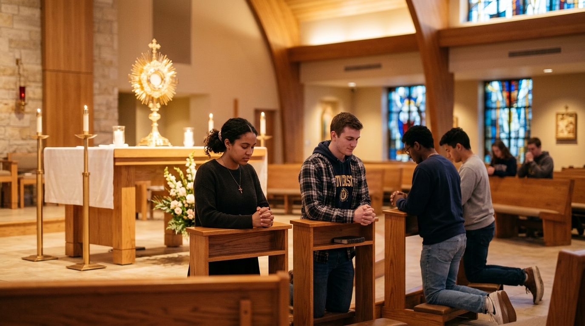

A vibrant Catholic movement formed to nurture faith, fellowship, and leadership on campus.

Jesus Youth is an international Catholic youth movement active across colleges, universities, and parishes worldwide.
At Amal Jyothi College of Engineering, our community creates a welcoming sanctuary where engineering students can nurture their spiritual life, form deep lifelong friendships, and serve others with love.
Through weekly prayer meetings, music, cell groups, outreach initiatives, and sacraments, we support one another in growing as joy-filled missionary disciples of Jesus.
To foster a creative and joyful Catholic lifestyle among young engineers and technologists through prayer, fellowship, leadership training, and active evangelization.
Forming vibrant missionary disciples who bring the light, truth, and compassionate love of Jesus Christ into academic institutions, families, professions, and the wider world.